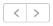

La pestaña Calendario le permite ver los clips de vídeo grabados y alarmas de las cámaras seleccionadas sobre la base del mes o día seleccionado.
Haga clic  parte superior de la página para seleccionar el mes anterior o el siguiente.
Los clips y alarmas aparecerán relacionados según la selección.
Haga clic en la parte superior de la página para seleccionar las fechas anteriores o las siguientes.
Según la selección, los clips y alarmas correspondientes aparecerán relacionados en la línea de tiempo del panel izquierdo.
Anterior Detalles de perfil
Siguiente Gestionar mapas